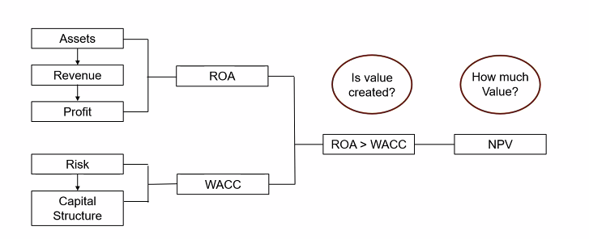

DMBA 6008 · Finance, Strategy and Technology · Week 1
Key value principles
My live-session notes for this week. These are working notes, not a study page — they are not published on the public week page and are not linked from anywhere on the site.
Live session
Unlisted — not indexed
Unlisted, not private. This page has no password. It is excluded from search engines and linked from nowhere, but it lives in a public repository, so treat anything here as readable by anyone who finds the URL.
Live Session Diary
Live SessionTodo
- [ ] Finish week 0
- [ ] Review wk 0
- [ ] Review class slides
- [ ] Transcript → AI → Any findings / Significant things mentioned
- [ ] Focus on what was mentioned for assessments
General Notes
“Finance is about making disciplined choices under constraints”
- Common theme: Too much hurts, not enough hurts
- What’s the right size for the organisation?
- The subject provides tools and techniques which will help to value a business
- Topics 2,3,4 are specific to assessment 1
- need to pick any two of the topics, ie any 2 of the classes (and breakout sessions too - this is encouraged, could differentiate from others)
- Two executive briefings need to be specific to learnings from the live classes
- Focus on the “so what” instead of simply the “what”
- This course will teach us how to ask the right questions to company boards and executives and etc.
- Most people if not all will be using AI to aid their assignments and submissions, need to find a way to stand out form the rest
- Double check references, [lecturer] found some “fakes” last semester
- Think about feasible scenarios when analysing a balance sheet
- If PPE is low, maybe old PPE was sold and new PPE is on lease
- What are we consuming now and what is an asset?

DMBA 6008 Finance, Strategy and Technology · Week 1 · live session
Built from my Obsidian vault on 31 August 2026. Lecturer and classmate names are withheld from every page on this site.